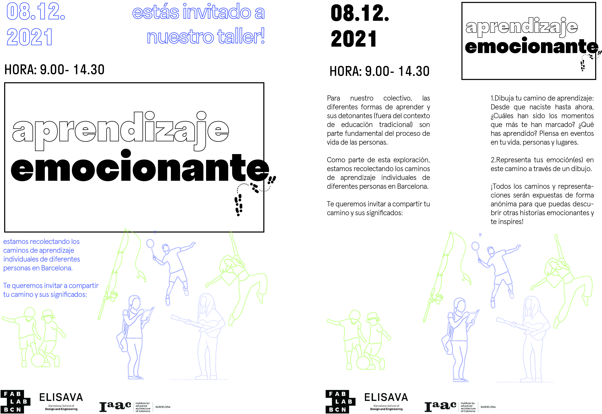
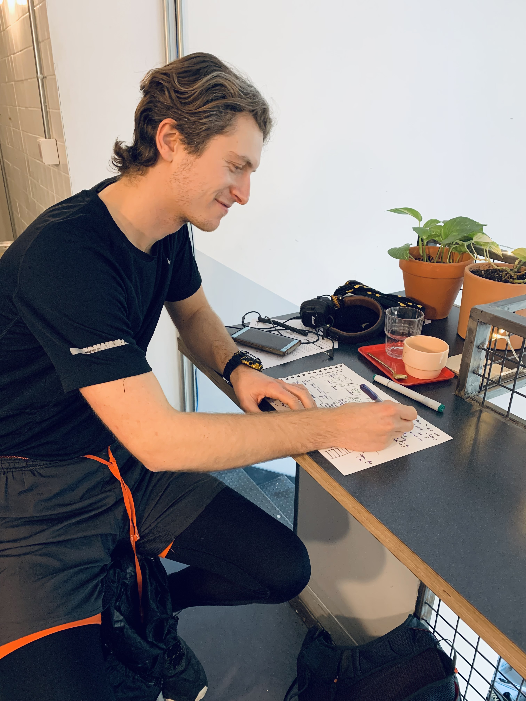
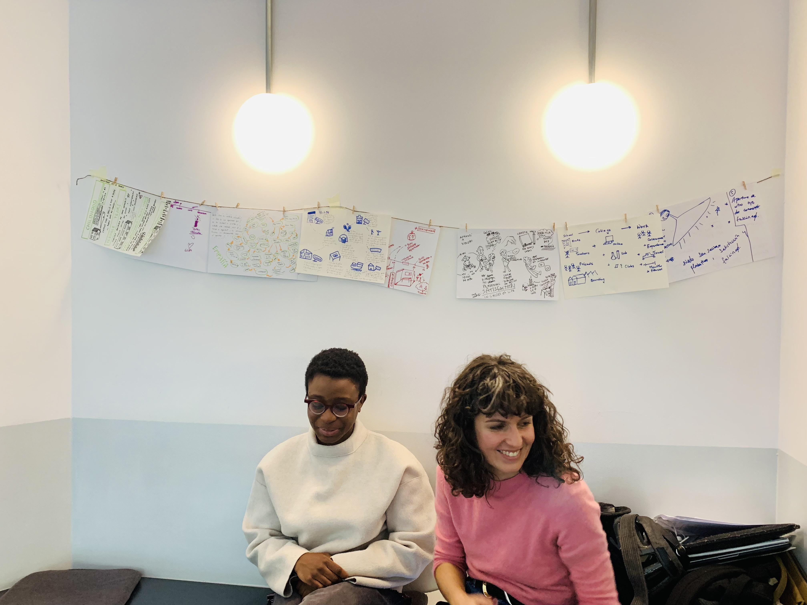
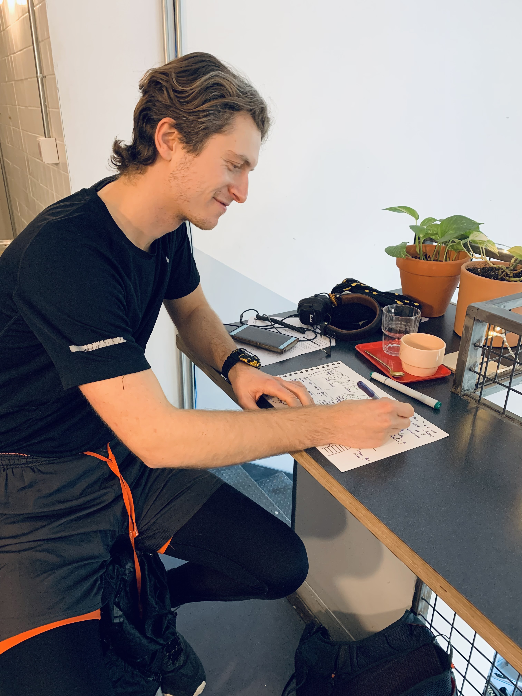
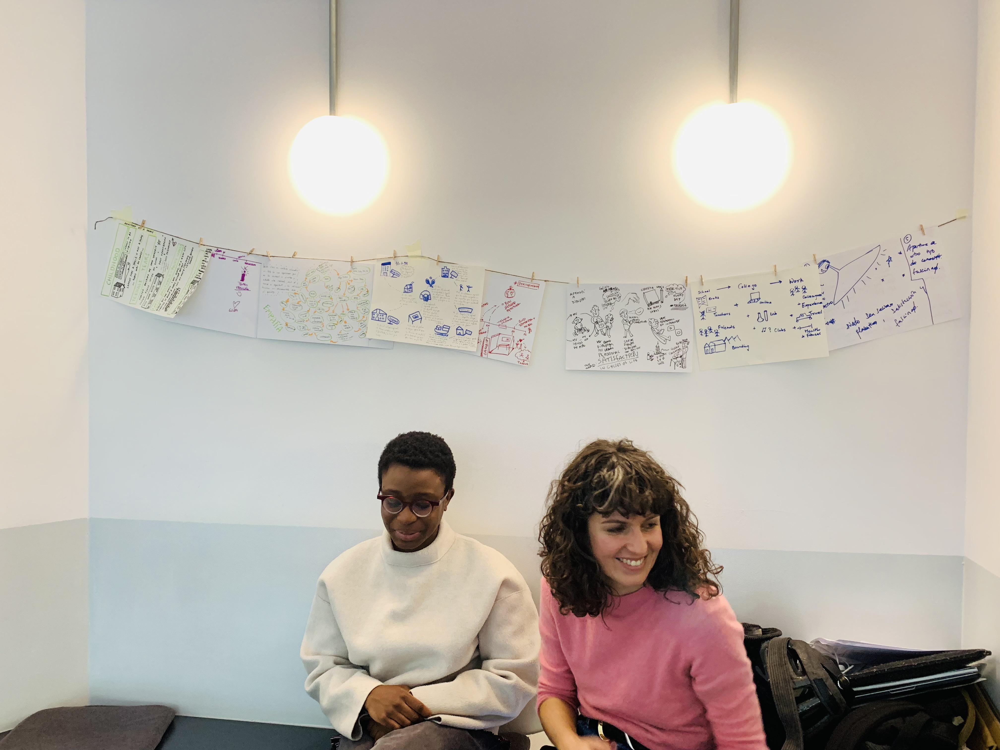

08Collective Design Intervention
Aprendizaje Emocionante
13 December 2021
Video of Our intervention
Framing A challenge
After Completing the Community Engagement seminar and after mapping our local ecosystems, we understood that as a collective we were interested in different individual interests where we sought to find where and how our links would create an impactful yet simple intervention in Barcelona. We began by first meeting and writing individual interests on the Miro Platform, where after design feedback we culminated to create a collective challenge. Finding and wording the challenge was not easy. Sometimes as a group we felt as though our interests were too different, yet we were encouraged to continue celebrating each other's differences and interests. I have interests in social engagement in tech as well as urbanism ideals and design for minorities, so I did not want this voice to be forgotten inside the group work.
Trying to make sense of who we are, and not having a clear direction yet, we met to have a brainstorming session on the themes we want to tackle. After a successful session, we made progress coming up with a design challenge:
We studied in systems created by the needs of previous generations and led by them.Today's needs changed and the hierarchy in teaching and learning should change as well. How can we change what we learn and how we learn it? How can we create new ways of learning, by raising our voice and showing our needs? Also how can we be aware of those needs?
The workshop was our learning path too
An Intervention Plan
After Wording a challenge and our collective interest, we contacted and met two contacts in our ecosystem for advice on how to go further in framing an intervention. We visited Merkel and Can Batllo and had a meeting with Clement from Aqui. My take away from the two meetings was that we should meet people where they are ( ask their specific needs ) and consider the impact we want to make with the intervention. Thus we furthermore divided our challenge into Input, output, outcomes (short term effect) and Impact ( long term effects)

Our intervention plan on Miro
Synopsis of the intervention
The insights after the meetings gave us clarity to make an action plan. Meeting with Dafni from the fab lab also gave ideas to represent learning paths in the form of a map and physical drawings. The aim of the intervention was to initiate workshops that collect individual learning paths of people in Barcelona, where in this event we invited participants to draw a map of the learning journey. Considering this, we increasingly drew interest in exploring the triggers outside of traditional education institutions that initiate learning; whether it be people, life experiences or places. We called this exploration Aprendizaje Emocionante (Exciting Learnings)
Workshop Objectives:
Using the canvas and drawing tools, ask the participants to draw a representation of moments of learning that shaped them greatly from since they were born until today. Ask them to keep in mind people who influenced them, places and emotions during these learning moments. After completing the canvas drawing, ask the participants to reflect on the drawing and paint the emotion of 1 moment they represented. The reflections were then recorded as voice notes. We also additionally sought to ask these questions : Who / what was the least expected person / thing that shaped you. Did you enjoy this moment of reflecting about the life moments that have shaped you?
Drawing my Learning Path:
Prototyping if the intervention will work
Before the intervention day, I participated in the objectives of the workshop together with Audrey to understand if our objectives were clear and could be executed. Jose additionally held a small workshop with his friends and family to gather insight before the intervention day. We tweaked a few questions and expected these outcomes: We don’t know what to expect. This is a means to collect data and prompts to use the information to come up with a sort of framework for learning systems The heart of the assignment is the sharing and moments of reflection after the mapping.

What actually Happened: Some reflections and Advice from Design Studio
What is our role as designers?We ran the workshops between two days at Three Marks Coffee shops and at Jarden Mariposa. The different locations offered different atmospheres and attracted different people which influenced the outcomes.
People who took part in the workshop were enthusiastic to share very personal and impactful moments in their lives.
We wanted to gain paths from different people from different walks of life, yet the participants at Three Marks Coffee were more curious to participate more than in Mariposa. This brings the question if the intervention was too broad or not accessible for everyone. Who is interested in talking about what they have learnt? What about people who have not gone to traditional schools ? Are they enthusiastic about talking about learning paths? After presenting our video, we were encouraged to think about creating a taxonomy of learning paths / systems to better understand how we learn naturally. In this I also learnt a new topic called Heretical learning. We also were encouraged to be sensitive to how people participated in the workshop and who can be further collaborators in the learning system. Where there is a interest, there is a need. In this case, we met Angel; a teacher who wanted to implement this workshop to the school he works in. How can we further refine how to define our role as designer with the insight?
 



What I learnt: Heretical learning: Nonconforming, hands on learning that disagree with tradiotional learning systems or principles. How can we as a collective celebrate or give voice to this kind of learning?


Screenshots of our website